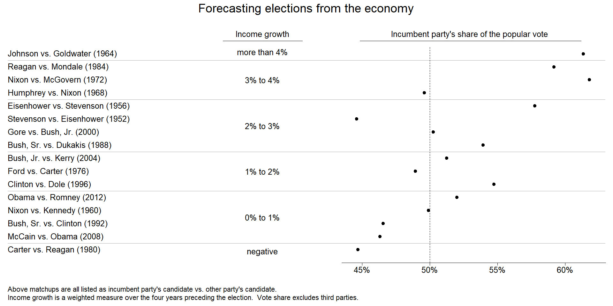
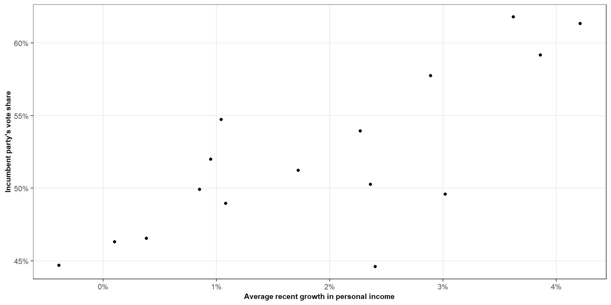
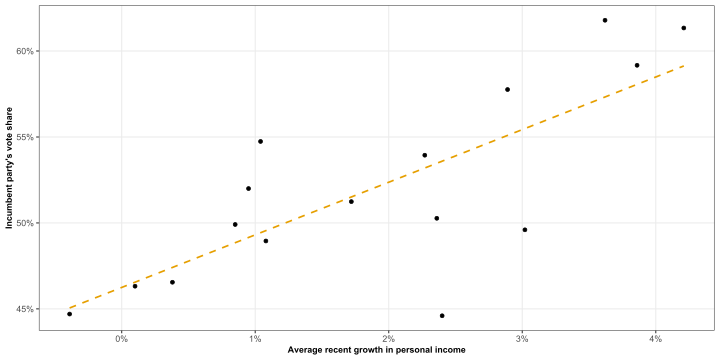
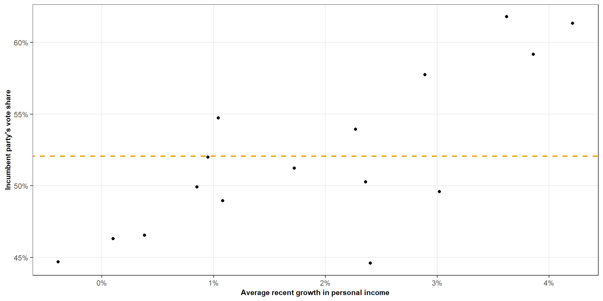
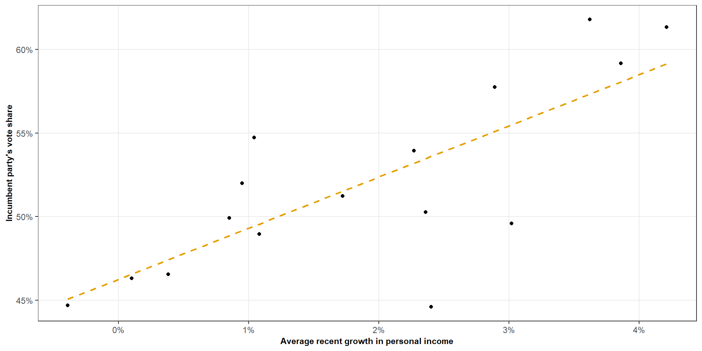
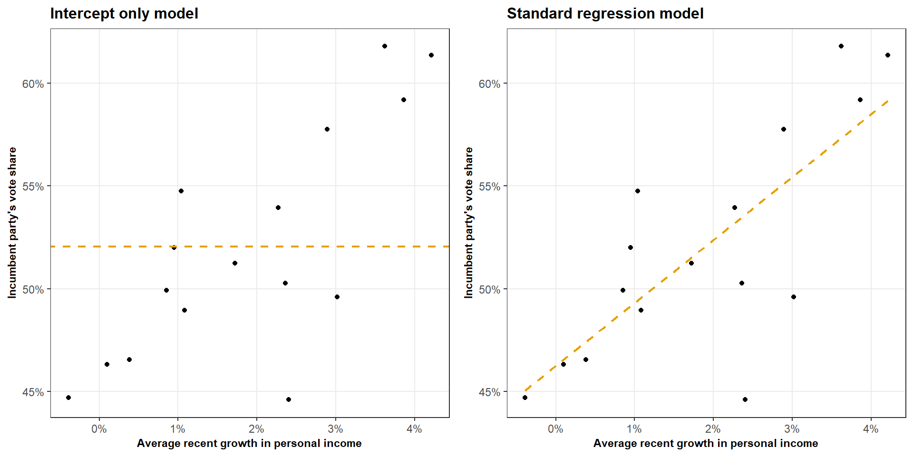
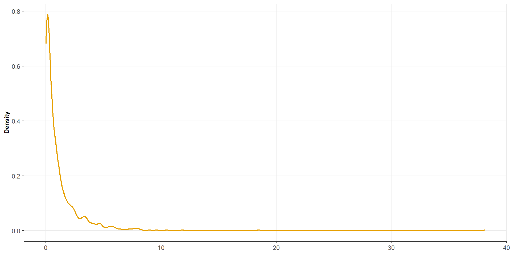

| Source | df | SS | MS | F |
|---|---|---|---|---|
| Regression | \(1\) | \(SS_R\) | \(MS_R\) | \(MS_R/MS_E\) |
| Error | \(n-2\) | \(SS_E\) | \(MS_E\) | |
| Total | \(n-1\) | \(SS_T\) |
ST303 - Linear Models



We have fitted a simple linear regression model
\[ Y_i \sim \beta_0 + \beta_1X_i + \varepsilon_i \]
Our model gives us a fitted value \(\hat{Y_i}\) for each observation
But how useful are these fitted values
How much of the variation in \(Y\) is explained by the regression?
Suppose we ignored economic growth completely
\[ Y_i \sim \beta_0 + \varepsilon_i \]

Naturally, when we include the slope we get a different set of predictions
\[ Y_i \sim \beta_0 + \beta_1X_i + \varepsilon_i \]


The standard regression has reduced the prediction errors
For every observation \(i\) we have the following
The observed value
\[Y_i\]
The estimated value
\[\hat{Y_i}\]
The residual
\[\varepsilon_i\]
Therefore we can say
\[ \boxed{Y_i = \hat{Y_i} + \varepsilon_i} \]
We want to understand the variation in \(Y\)
\[ Y_i - \bar{Y} \]
\[ \begin{align*} Y_i &= \hat{Y_i} + \varepsilon_i \\[4pt] Y_i - \bar{Y} &= (\hat{Y_i} - \bar{Y}) + \varepsilon_i \\[4pt] \sum^n_{i = 1}(Y_i - \bar{Y})^2 &= \sum^n_{i = 1}\Big[(\hat{Y_i} - \bar{Y}) + \varepsilon_i\Big]^2 \\[4pt] \sum(Y_i - \bar{Y})^2 &= \sum(\hat{Y_i} - \bar{Y})^2 + \sum \varepsilon_i^2 + 2 \sum(\hat{Y_i} - \bar{Y}) \varepsilon_i \end{align*} \]
\[ \boxed{\sum(Y_i - \bar{Y})^2 = \sum(\hat{Y_i} - \bar{Y})^2 + \sum \varepsilon_i^2} \]
We call this ANOVA decomposition
We have decomposed the total variation in \(Y\) into two parts:
Explained
\[ \sum (\hat{Y}_i - \bar{Y})^2 \]
Unexplained
\[ \sum \varepsilon_i^2 \]
Total variation = Explained variation + Unexplained variation
Total variation = Explained variation + Unexplained variation
| Quantity | Definition | Meaning |
|---|---|---|
| Total SS | \(\displaystyle SS_T=\sum(Y_i-\bar Y)^2\) | Total variation |
| Regression SS | \(\displaystyle SS_R=\sum(\hat Y_i-\bar Y)^2\) | Explained variation |
| Error SS | \(\displaystyle SS_E=\sum e_i^2\) | Unexplained variation |
So another way of writing this
\[ SS_T = SS_R + SS_E \]
This is the ANOVA decomposition
The decomposition can be summarised as an ANOVA table
| Source | df | SS | MS | F |
|---|---|---|---|---|
| Regression | \(1\) | \(SS_R\) | \(MS_R\) | \(MS_R/MS_E\) |
| Error | \(n-2\) | \(SS_E\) | \(MS_E\) | |
| Total | \(n-1\) | \(SS_T\) |
where
\[ MS_R = \frac{SS_R}{1} \qquad MS_E = \frac{SS_E}{n - 2} \]
How much
variation
is explained?
\[ SS_T = SS_R + SS_E \]
What proportion of the total variation is explained by the regression
\[ R^2 = \frac{SS_R}{SS_T} \qquad \text{OR} \qquad R^2 = 1 - \frac{SS_E}{SS_T} \]
\[ R^2 = \frac{SS_R}{SS_T} = \frac{273.63}{472.91} = 0.58 \]
Now we know much variation does the regression explain?
Is there evidence that the regression explains more variation than we would expect if there were no linear relationship?
\[ H_0: \beta_1 = 0 \qquad H_1: \beta_1 \ne 0 \]
\[ Y_i \sim \beta_0 + \varepsilon_i \]
Hence, if \(H_0\) was true, we would expect \(SS_R\) to be relatively small compared to \(SS_E\)
We compare the two mean squares
\[ F = \frac{MS_R}{MS_E} \qquad \text{OR} \qquad F = \frac{SS_R/1}{SS_E/(n-2)} \]
If \(H_0\) was true, we would expect \(F \approx 1\)
If the regression explains substantially more variation than expected under \(H_0\)
\[ MS_R \gg MS_E \qquad \text{Then} \qquad F \gg 1 \]
Hence, large F values provide evidence against \(H_0\)
But how do we determine a large F value?
The F statistic has it’s own corresponding distribution the F distribution

The F statistic has it’s own corresponding distribution the F distribution
Decomposition
\[ \boxed{SS_T + SS_R + SS_E} \]
Variation explained
\[ \boxed{R^2 = \frac{SS_R}{SS_T}} \]
F-statistic
\[ \boxed{F = \frac{MS_R}{MS_E}} \]
ANOVA decomposition gives us a way to think about regression as a decomposition of variation
Total variation = Explained variation + Unexplained variation
Simple linear regression
Multiple linear regression
Comparing models